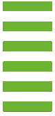

Creative Director
Name Jonathan Edwards
D.O.B 4th January 1982
Address 123 Street Name,
Town/City,
State/County,
Post/Zip Code
Phone 028 1234 5678
Email jonathan@gmail.com
Website www.yourwebsite.com
This is a section where you describe your professional career. Let the potential employer know why they would want to hire you. Use this section for particular career highlights, collaborations or stepping stones to where you are now as a professional.
Describe yourself personally. Your goals, aspirations and why a particular company should choose you as an employee. Use this section to describe your hobbies and interests, show your potential employer that you are a well-rounded individual.
Sports Clubs
Club Name
Organisations
Organisation Name
Volunteering
Where you volunteered
AWARDS
Your Award 2007
Awarding Body
Your Award 2007
Awarding Body

JONATHAN
EDWARDS
123 Street Name,
Town/City,
State/County,
Post/Zip Code
T: 028 1234 5678
E: jonathan@gmail.com
www.yourwebsite.com
Website: www.yourwebsite.com
Phone: 028 1234 5678
Email: jonathan@gmail.com
ABOUT ME
PERSONAL
EMPLOYMENT
CURRENT POSITION
Creative Director
Advertising Agency
New York, USA
2012-14
UI Designer
Web Design Company
London, UK
Graphic Designer
Design Company
Milan, Italy
Junior Designer
Design Company
London, UK
2010-12
2007-10
2005-07
PREVIOUS POSITIONS
Adobe Illustrator
Adobe Photoshop
Adobe InDesign
Microsoft Office
HTML (5)
CSS (3)
SKILLS
MA Advertising
University/College
London, UK
BA (Hons) Graphic Design
University/College
London, UK
2003-05
2000-03
EDUCATION
ONLINE
behance.net/jonathan
facebook.com/jonathan
dribbble.com/jonathan
Mr Smith
Position in Company
Company Name
123 Street Name, Town/City, State/County, Post/Zip Code
T: 028 1234 5678
E: john.smith@gmail.com
Mrs Jones
Position in Company
Company Name
123 Street Name, Town/City, State/County, Post/Zip Code
T: 028 1234 5678
E: jane.jones@gmail.com
REFERENCES